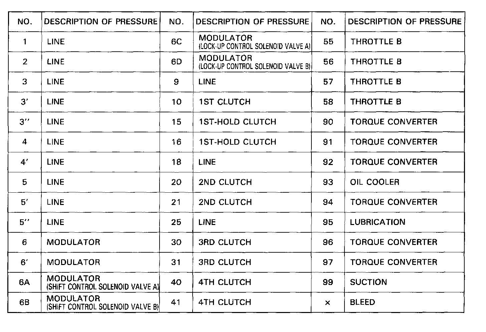

General Chart of Hydraulic Pressure

General Chart of Hydraulic Pressure
Oil Pump - Regulator Valve
-Line Pressure
-Torque Converter Pressure
-Lubrication Pressure
Distribution of Hydraulic Pressure
Regulator Valve
-Line Pressure
-Torque Converter Pressure
-Lubrication Pressure
Manual Valve - To Select Line Pressure
Modulator Valve - Modulator Pressure
-1-2 Shift Valve
-2-3 Shift Valve
-3-4 Shift Valve
Clutch Pressure
Throttle Valve B - Throttle B Pressure